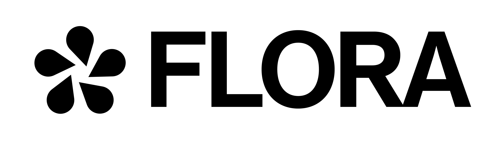

FLORA – Générateur d’email
Langue
Français
English
Nederlands
Gamme Flora
Flora N°0 (sans alcool)
Flora N°1–2–3 (avec alcool)
Salutation
Nom du partenaire
Type de lieu
Salle de sport
Club de padel
Club de running
Studio yoga
Galerie d’art
Bar
Nightclub
Festival
Pop-up
Entreprise
Hôtel
Concept store
Restaurant
Type de collaboration
intégrer nos produits
imaginer une collaboration événementielle
mettre en place une activation
collaborer autour d’un lancement de produit
organiser un afterwork
discuter d’un projet futur
Nom expéditeur
Générer l’email
Email généré (modifiable)
Copier le texte
Copié !